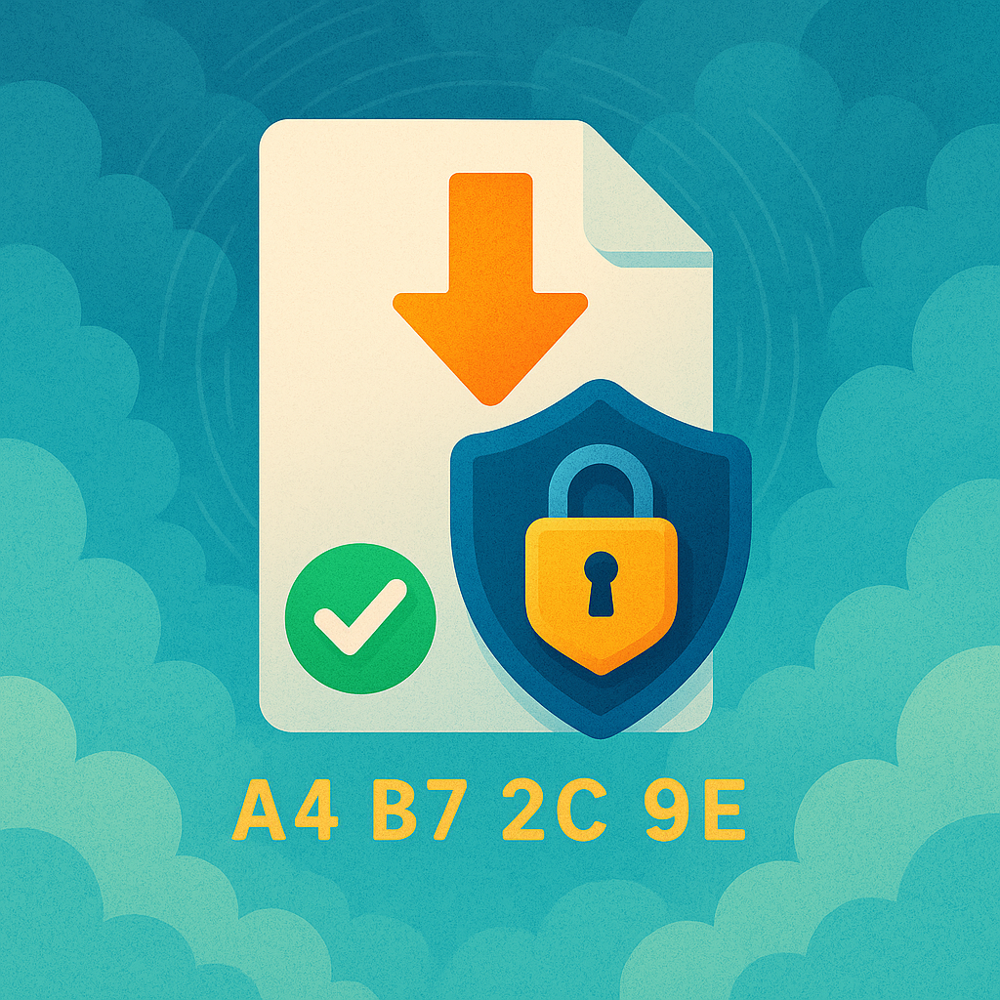

We believe security software like Kicksecure needs to remain Open Source and independent. Would you help sustain and grow the project? Learn more about our 14 year success story and maybe DONATE!
QubesDocumentationDownload IssuesPrevious page: QubesIndex page: DocumentationNext page: Download IssuesDownload Security

Kicksecure comes with many security features. Kicksecure is Security Hardened by default and also provides extensive Documentation including a System Hardening Checklist. The more you know, the safer you can be.
This page is targeted at users who wish to improve the security of their systems for even greater protection.
Digital signature verification of any downloaded software (such as Kicksecure) is an important step for system security. Hence, there is a recommendation to Always Verify Signatures.
Introduction
There are various ways to ensure the integrity of software downloads:
- A) TLS: Kicksecure, like most software projects nowadays, can be downloaded over TLS (formerly SSL), which provides basic authentication. Note that the TLS certificate authority (CA) system is seriously flawed and poses the risk of security breaches; therefore, it should be avoided if possible.
- B) onion: Kicksecure is alternatively also available over an onion. The onion is hosted on the same server. While using an onion is better, it is challenging for users to learn the legitimate onion domain name. Once securely acquired and bookmarked, an onion may provide better authentication than TLS.
- C) Digital software signatures: As documented on the Verify Kicksecure Images page, OpenPGP verification is far safer and is strongly recommended as an alternative to plain TLS.
- D) Build from source code: The most secure method (but also more challenging) for obtaining Kicksecure is to build it from source code. This method eliminates the need to trust that developers have actually created binaries which match the source code. For utmost security, the source code can be reviewed beforehand. Unfortunately, as with any software project, very few people will have the time and skills to do this.
Related:
ISO Image Writer Tools
For Windows Host Operating Systems
balanaEtcher
balenaEtcher has the best usability. It flashes, validates, has a nice target selection screen which gets instantly updated when a new device gets connected. It has been reported to be compatible with Kicksecure ISO on the Windows and Linux platform. No reports for macOS yet.
There are no extraneous options that easily confuse users. However, balenaEtcher comes with issues.
For Windows and macOS, we instruct people to use balenaEtcher to copy the USB image onto their USB stick. On top of this, we self-host the downloads of balenaEtcher on our own infrastructure. The https://gitlab.tails.boum.org/tails/etcher-binary repository is added as an ikiwiki underlay on our website.
We self-host a copy of balenaEtcher because:
- It gives us more predictability on what users end up doing. This is useful in terms of Help Desk.
- It prevents 3rd parties from learning a bit more about who uses Tails. Pointing to GitHub from our website would provide direct referrers to GitHub (and maybe Balena too) about who is using balenaEtcher to install Tails.
- It prevents GitHub from serving rogue downloads (targeted or not). We might still get a rogue download ourselves but:
- We download balenaEtcher several times from different locations to prevent targeted attacks.
- We download balenaEtcher in a limited time window, which might save our users some supply chain issues. If our users were to download balenaEtcher every time, a short-time supply chain attack would definitely affect some of them.Tails installation instructions
Etcher is an Electron app, i.e. essentially a glorified webapp wrapped in a window; this is a rather common way to build a cross-platform app these days. It's GUI is made of HTML + JS. Some of it is shipped in the app itself, some of it is dynamically fetched from balena.io at run time. So we clearly can't even try to protect against "Balena knows that someone is using Etcher from $IP". I did not check whether the web content retrieved at run time can inject arbitrary JS which could itself include tracking code.
The
analyticsmodules fetches its config over plaintext HTTP (and is then redirected to HTTPS but that's too late). It uses mixpanel.com. I'm not sure I understood the code correctly but at first glance it seems that at least errors (and possibly more) will be reported there. So basically, an active MitM could have users report to an URL chosen by the attacker. "Interesting".Some of the outgoing HTTP requests include the Etcher version as a parameter. External modules, which I did not inspect, are used to perform HTTP requests. The ads seem to be fetched from https://assets.balena.io/etcher-featured/index.html. I did not try to decipher the obfuscated/minified JS found there but at the very least, it seems to report to Google Analytics. I'm stopping here. tl;dr is: Etcher is definitely not behaving as one would expect a privacy-friendly local app would. It's behaving more like any random modern website, including all kinds of tracking technologies. Fixing this would require major changes so that's unlikely to happen. It's non-trivial to check whether the code reports to Balena or random third parties (such as Google, Mixpanel) what image is being installed; and even if we did this audit work now, our results would be invalidated by every new Etcher release. So it seems we have two options:intrigeri, Tails developer
After adding MitM to my packet sniffing I can confirm gameindustry's findings that balenaEtcher exfiltrates very sensitive information. For instance, the filename of the image will let Balena know that the user is flashing Tails, full details: exfil.json. It also exfiltrates tons of information about the host system to sentry.io, an "app monitoring service", definitely making it uniquely identifiable. Disabling the telemetry in its configuration indeed does stop it from exfiltrating the
exfil.jsonfrom above, but it doesn't do anything about the data sent to sentry.io, which includes the image name, so there is no way to configure balenaEtcher to not leak that Tails is being flashed. The good UX of balenaEtcher is not worth this.anonym, Tails developer
The issue of Telemetry is known by balena, the developer of etcher as per github issues Telemtery should be opt-in, Etcher secretly spies on the user without consent. balena however closed the tickets and no changes have been made.
This has resulted in bad press for Tails.
Author's note
What I wonder about, in the context of Tails, an operating system focused on privacy and security, is why the providers of the Tails Foundation suggest BalenaEtcher as the primary program for creating images of the operating system on their own website. It is absolutely incomprehensible and not only negligent but also contradicts any understanding of security and data privacy.
The Tails Foundation has been contacted in this regard and has been approached for comment.GameIndustry BalenaEtcher Review and Privacy Analysis
See also:
Forum discussions:
- https://forums.kicksecure.com/t/microsoft-windows-iso-writer-documentation-write-kicksecure-iso-to-usb-balenaetcher-issues/434
- https://forums.kicksecure.com/t/balenaetcher-shares-sensitive-information-to-the-balena-company/1558
- https://forum.torproject.org/t/nature-of-etcher-portable-is-it-safe-a-current-version-doesn-t-start-right/9233
Therefore Kicksecure ISO
installation instructions do not use balenaEtcher and instead suggest
using KDE ISO Image
Writer. [1]
From Microsoft Windows Software Store
If there was an ISO to USB image writer available from Microsoft Windows Software Store, then using that might be more secure. That is because all software from the Windows Store comes with digital signatures which are verified prior to installation, similar to Linux software package managers such as Debian's APT.
- Only compatible with Windows-based ISOs but not Linux distributions.
- Complicated interface.
- Bad rating.
- Paid software.
- Proprietary. (This might be OK since Windows itself is proprietary.)
Should you be able to find an ISO to USB writer tool in the Windows Store that is compatible with Linux distributions, is free in price, and has a simple interface, please contribute by letting us know in the forums.
related:
Rufus
Rufus is available from the Windows Store, but the author of this wiki page didn't check if this is the original Rufus. Also, Rufus has been disregarded because its graphical user interface is too complicated for users to use. There are some other bootable USB search results. From what the author has seen, many tools are not suitable.
https://forums.kicksecure.com/t/warning-prob-with-installing-on-verbatim-seaglass-drives-false-alarm/1359/21
ImageUSB
Freeware. Non-freedom software. Appears straightforward in usage.
It is not advisable to recommend replacing balenaEtcher (Open Source, with known privacy concerns) with the closed-source ImageUSB. The latter might have similar issues, but these have not been scrutinized and are more challenging to assess due to its closed-source nature.
USBImager
Functional. Has usability issues.
For MacOS Host Operating Systems
USBImager is suggested because KDE ISO Image Writer is unavailable for MacOS. Not maintained by a huge project but also no negative information about USBImager could be found.
related:
For Linux Host Operating Systems
GNOME Disks is suggested. Usability isn't as good as balenaEtcher or KDE ISO Image Writer. GNOME Disks' interface is more complicated to use for users. GNOME is also a huge project and no negative information about GNOME Disks could be found. GNOME Disks is available from official Debian and many other Linux distribution's package sources, which simplifies its installation and no manual digital software signatures verification is requires since this is usually handled by the distribution's package manager.
At time of writing, KDE ISO Image Writer is not in packages.debian.org.
Other Image Writer Tools
UNetbootin
Available for Windows, Linux, macOS. Looks nice. Was reported compatible with Kicksecure.
At time of writing, last git commit on unetbootin GitHub was 10 months ago, UNetbootin last release February 2021.
SUSE Image Writer
- https://github.com/openSUSE/imagewriter
- https://snapcraft.io/install/isoimagewriter/opensuse
- Only Linux version
- Last commit in 2020 (Somewhat unmaintained.)
Self-Hosting vs Third Party Hosting
Self-hosting of image writer tools on the Kicksecure server advantages:
- Better user privacy in theory, in practice, see also Server Privacy.
Self-hosting of image writer tools on the Kicksecure server disadvantages:
- Higher maintenance effort of download, digital software signature verification (if available), upload of ISO image writing tool
- Reputational risk in case of issues with the ISO image writing tool (such as Telemetry or other Malware).
- Expand the project's scope, distracting from higher priority development tasks.
Therefore it has been decided not to expand the project's scope to include this activity.
See also Self-Hosting vs Third Party Hosting.
Other Linux Distributions
- https://en.opensuse.org/SDB:Live_USB_stick
- https://en.opensuse.org/SDB:Create_a_Live_USB_stick_using_Windows
- https://en.opensuse.org/SDB:Create_a_Live_USB_stick_using_macOS
Digital Software Signature Verification
- Digital signatures are a tool enhancing download security. They are commonly used across the internet and nothing special to worry about.
- Optional, not required: Digital signatures are optional and not mandatory for using Kicksecure, but an extra security measure for advanced users. If you've never used them before, it might be overwhelming to look into them at this stage. Just ignore them for now.
- Learn more: Curious? If you are interested in becoming more familiar with advanced computer security concepts, you can learn more about digital signatures here: Verifying Software Signatures
Having read Verifying Software Signatures is a prerequisite for understanding this wiki chapter.
Culture Comparison of Digital Software Verification in Major Operating Systems
- Windows: Tools for software digital signature verification
are not installed by default on the Windows platform. They could be
manually installed, but there is a bootstrap issue. These tools
themselves would have to be downloaded over HTTPS, i.e., with only a
very basic form of authentication.
- For Windows, related: Windows Software Sources and Authenticode
- macOS: macOS comes with Gatekeeper. See also Apple's official documentation on safely opening apps on your Mac.
- Linux distributions: In contrast, on the Linux platform, the GnuPG software digital signature verification tool is usually installed by default, and many software projects provide digital software signatures.
Third-party Tools Digital Software Signature Availability
- ISO Image Writer Tools:
- KDE ISO Image Writer: Hashsums are available for KDE ISO Image Writer but no digital software signatures. Verification (SHA256) for KDE ISO Image Writer is briefly in the Kicksecure ISO documentation. See chapter #Benefits of Hash Sum Verification of Third-Party Tools in the Absence of Digital Software Signatures.
- USBImager: Providing neither hashsums nor digital software signatures at the time of writing.
Verification On-Demand versus On-Offer
Digital software signature verification using GnuPG (or Signify) is conceptually something that users need to expand, look for, and demand. We can summarize this as "digital software signature verification is on-demand." It is not something that websites like Kicksecure or other software project websites can simply explain to users as "on-offer." Digital software signature verification requires that users understand its importance before visiting a software project's website.
If a project's website used to provide digital software signatures but then stopped, or if there are unexplained signing key changes (where, for example, the new key is not signed by the old key), users must recognize that something might be wrong. Users should refrain from using the software without successful digital software verification; failing to do so would defeat the very purpose of digital software verification.
A user who,
- A) Sufficiently understands the importance of never installing unverified software prior to visiting a software project's website: Doesn't need to be told about it and will act accordingly in any case.
- B) Has never heard about it: Is unlikely to have the motivation to be redirected to learn and do something highly complex (verification) beforehand and rather abandons the download process.
- C) Copies and pastes verification commands without sufficiently understanding the threat model: Doesn't benefit in case of TLS being compromised.
Responsibility of Digital Software Signature Education
Therefore, it is not the responsibility of software project websites like Kicksecure to educate users about digital software signatures. These websites are typically only available over TLS, a basic form of authentication. The information provided might be malicious if an adversary managed to compromise TLS or the web server.
Digital Software Signature Utility versus Usability and Impact
A problem is that manual digital signature verification by the user using GnuPG is so complicated that it requires a complete course on theory and practice.
For instance, if a Windows user has installed a lot of software from internet sites--as is commonly done on the Windows operating system--but never performed digital software verification, it makes little sense to go above and beyond before downloading something like an ISO image writer.
By making installation instructions for any software, such as a Linux distribution, overly complicated with a too strong emphasis on digital software verification, it can give users who have never heard about it the impression that such a procedure is specific to the software they are intending to install. This can lead to perceptions of increased security risk if skipped, creating a usability issue that may lead users to abandon the installation altogether. Such complexity can elicit feedback like "I have never seen such complicated installation instructions in my life." or "I've never had to verify anything before in my life," which is counterproductive.
As a result, users might continue using proprietary, closed-source, less privacy-respecting, and less secure operating systems (such as Windows Hosts) instead of freedom software, like Linux distributions such as Kicksecure.
Comparison with Linux Distributions
This conclusion is apparently common among other security, privacy-focused, and other Linux distribution maintainers.
By comparison:
- Qubes installation guide uses Rufus on Windows to write Qubes ISO to USB. No mention of digital software verification of Rufus.
- Debian Install wiki mentions Rufus also without verification.
- elementary OS Installation suggests balenaEtcher.
- Tails Windows ISO to USB guide uses balenaEtcher but no mention of digital software verification.
OpenPGP signatures
Unless the user knows how to verify the signing key through the OpenPGP Web of Trust, this technique ultimately relies on a correct download of the signing key and signature, and thus on HTTPS.
[...]
We provide an OpenPGP signature of our downloads.
[...]
OpenPGP verification instructions
We removed the instructions to verify downloads with OpenPGP because:
Without advanced knowledge of OpenPGP, verifying with OpenPGP provides the same level of security as the JavaScript verification on the download page, while being much more complicated and error-prone.
None of our personas would have enough knowledge of OpenPGP to use the OpenPGP Web of Trust with confidence.
Providing basic (and never exhaustive) instructions has proven to be very time-consuming to our help desk and technical writers. See #17900.Tails Design, Download verification
[...] the huge majority of our users should not even be suggested to do an OpenPGP-based verification. We've spent so much time in the past trying to make it doable for them, and now I can see why we gave up.intrigeri, Tails developer
Benefits of Hash Sum Verification of Third-Party Tools in the Absence of Digital Software Signatures
Hash sum verification can provide a basic form of authentication, similar in level to HTTPS (TLS). It is primarily useful for integrity checks, as the hash sum is provided over the same channel (TLS) as the download itself. Consequently, hash sum verification does not offer any higher assurance than the download channel itself.
Even in the absence of digital software signatures for third-party tools, hash sum verification still offers benefits if the following conditions are met:
- 1) TLS is functional and not compromised.
- 2) The project website has good integrity and is not compromised.
- 3) The third-party tool's website had good integrity in the past but was compromised by the time the user accesses it.
See Also
- Verifying Software Signatures
- Software Signature Verification Usability Issues and Proposed Solutions
- Verify the images
Footnotes
- The KDE project is huge, has a long, positive history. KDE ISO Image Writer does not have a history of privacy intrusions. No negative information about KDE ISO Image Writer could be found. It is not used due to known issues elaborated in chapter KDE ISO Image Writer.
Categories: Documentation